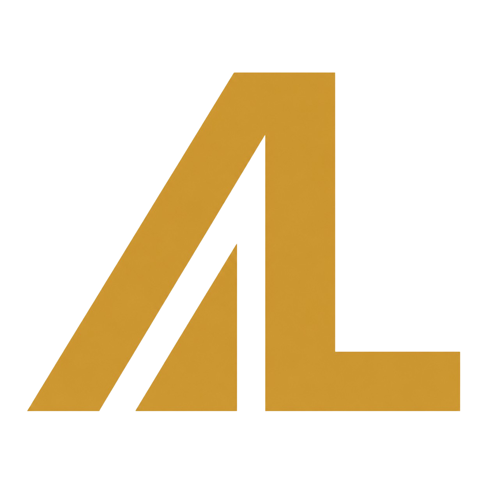

Dino Run
Hub
0
Choose your pace.
Space / Up · Click · Tap
Easy
Slower start, gentler ramp. A relaxed run.
Medium
The standard run. Balanced speed and obstacles.
Hard
Fast from the start. Boulders arrive early.
Best Score
0
Jump the thorns, duck the crows, dodge the boulders.
Down arrow · swipe down to duck.
Game over.
It never gets easier — only more familiar
Score
0
Best
0
New Best
Run Again
Back to Home
Space · Click · Tap to retry